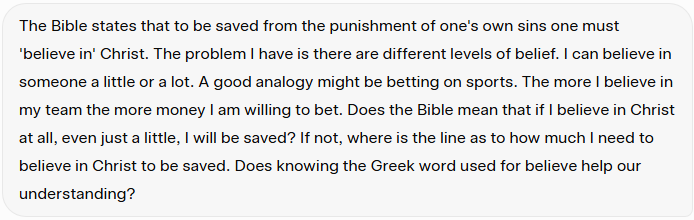

Woke up with a thought and ended up asking AI about it, since you guys and AI are now my only friends. Here's the question I couldn't shake:

The Bible says to be saved from the punishment of one's own sins, one must “believe in” Christ. My problem is that belief comes in levels — I can believe in something a little or a lot. A decent analogy is betting on sports: the more I believe in my team, the more money I'm willing to put down. So does the Bible mean that if I believe in Christ at all, even a little, I'm saved? If not, where's the line? And does the Greek word behind “believe” help answer that?
It turns out the Greek word, pisteuo (πιστεὑω), already carries more weight than our English “believe.” It means to trust, to rely on, to commit yourself to — not just to give intellectual assent to a fact. That distinction matters, because James 2:19 says even demons “believe” God exists, and shudder — real intellectual agreement, zero saving faith. John 3:16's “believes in him” (eis auton, literally “into him”) implies motion — not standing back and evaluating, but moving toward and resting in.
The Latin theologians split this into three categories that I found genuinely clarifying: notitia (knowing the facts), assensus (agreeing the facts are true), and fiducia (personal trust and reliance) — and it's only fiducia that saves. My favorite illustration for the difference is a chair: you can know a chair exists and agree it's sturdy enough to hold your weight, but until you actually sit down in it, you haven't trusted it with anything. Fiducia is sitting down.
What encouraged me most is that Scripture doesn't require a flawless, doubt-free version of fiducia to count as saving faith. The father in Mark 9:24 cries, “I believe; help my unbelief!” — and gets his miracle anyway. Peter starts sinking the moment he doubts on the water, yet Jesus calls him “little faith,” not “no faith” (Matt 14:31). Thomas gets to touch the wounds before he'll believe, and Jesus still receives his confession (John 20:27–29). Weak, wavering, real trust still counts as trust.
Going back to my own sports-betting analogy: God isn't asking for confidence-based certainty, some threshold percentage of belief before it “counts.” He's asking you to bet your entire life and eternity on Jesus — not how sure you feel about the bet, but whether you've actually placed it.
I liked Jon's summation on this even better than my own: have courage to trust Him, and get into a rhythm of worship, sharing our story, and serving others. That's fiducia lived out, not just defined.
Comments